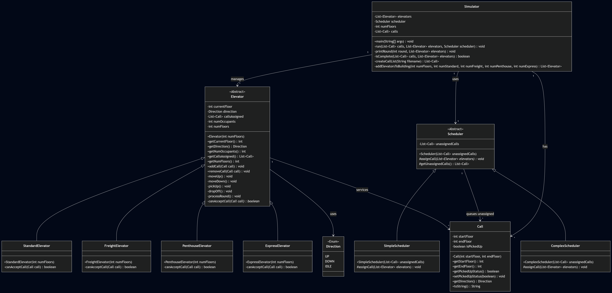

Who you are
Professional info
Hobbies
Projects

Project 3: Elevator Simulator
The Elevator Simulator is a model of a multi story multi elevator building that serves passenger requests over time ticks. We designed and implemented it to practice TDD, the four pillars of OOP, and the SOLID principles in real code. Besides the code itself, this was a good experience in working in a pair and using Git branching, pull requests, and code reviews to actually collaborate on the same project.
What it does: The simulator takes a building size from the command line number of floors, a scheduler type, how many of each elevator type to add, and a CSV file of calls describing where each passenger is starting and where they want to go. On each round the scheduler assigns at most one call to an elevator, and then each elevator moves one floor toward completing its assigned work. Every elevator type has its own acceptance policy. For example, the express elevator only services the top half of the building and the ground floor, and the freight elevator only carries one passenger at a time. When an elevator has no assigned calls it returns to the ground floor and waits. The simulation prints the state of every elevator each round and ends once every call has been answered and every elevator is back on the ground floor.
The design: The design leans heavily on the four pillars. We used abstraction for both Elevator and Scheduler, which define the shared behavior and leave the type-specific rules to the subclasses. Each subclass only has to implement the one rule that makes it different canAcceptCall for elevators and assignCall for schedulers. Fields like currentFloor and numOccupants are hidden behind getters, and polymorphism is what makes the scheduler work since it only talks to elevators through the abstract Elevator type. We also used the strategy pattern in the scheduler and elevator hierarchies and the template pattern in processRound() where the base class calls canAcceptCall polymorphically on the subclass.
What I built: My part of the implementation was the Standard and Express elevators, the Complex scheduler, and the processRound state machine on the Elevator base class that drives everything each tick. I also helped wire up the Simulator's run loop and termination check. For every method I followed TDD write the test first, watch it fail, write just enough code to make it pass, commit that pair as one step, then move on. Doing code reviews on my partner's pull requests was one of the most valuable parts. I caught a bug in the complex scheduler where direction changes weren't being counted in the closest elevator calculation, and my partner caught a bug where passengers were being counted twice when the elevator picked up at a floor where it had already picked someone up before.
What I learned: The biggest thing I got out of this project was how much TDD actually speeds things up. Writing the test first made me think through the edge cases before writing the real logic, and any time we refactored the tests immediately told us what broke. I also got a real feel for how small API decisions early on like whether the scheduler takes a list in its constructor or exposes an addCall method can cause big merge conflicts later if the two people on the team aren't on the same page. Clear PR reviews with specific line comments made those moments much easier to resolve.
Contact Me
email address